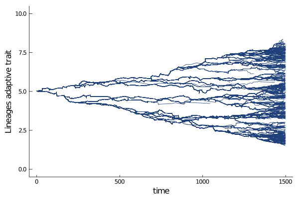

Environmental Gradient
In this tutorial, we model agents evolving on a discrete segment, where each patch favours an optimal adaptive trait, along a gradient. This is typically the case along an altitudinal gradient.
Here is what the geographical space looks like.

Every colour stands for a different optimal trait.
Run the world
using Revise,EvoId,Plots,UnPack
nodes = 9
dim_neutr = 30
geospace = DiscreteSegment(Int8(1),Int8(nodes))
adaptivespace = RealSpace{1,Float16}()
myspace = (geospace,adaptivespace)
sigma_K = 1.;
sigma_a = .8;
K0 = 1000;
mu = [1.,1.]
a = 1
b(X,t) = gaussian(X[2],X[1] * a,sigma_K) / nodes
d(X,Y,t) = (X[1] ≈ Y[1]) * gaussian(X[2],Y[2],sigma_a) / K0
NMax = 2000
D = (5e-1,5e-2)
# tend = 1.5
tend = 1500
p = Dict{String,Any}();@pack! p = NMax,mu,D
myagents = [Agent(myspace,(Int8(5),Float16(5) + Float16(5e-2) * randn(Float16),),ancestors=true,rates=true) for i in 1:round(K0/nodes)]
w0 = World(myagents,myspace,p,0.)
s = run!(w0,Gillepsie(),tend,b,d,dt_saving=5);
Plots.plot(s, ylabel = "Adaptive trait",trait=2)
Animated trait space
Here we show how to plot a cool animated scatter plot of the trait space through time.

Plotting lineages
A cool feature of EvoId.jl is its ability to track agents ancestors traits (cf Agent section)
On can plot it, to get an idea of the coalescence of the population.

Beautiful, isn't it?
Some metrics are available (cf Metrics section) that summarize the divergence in trait value (or geographical position) through time).